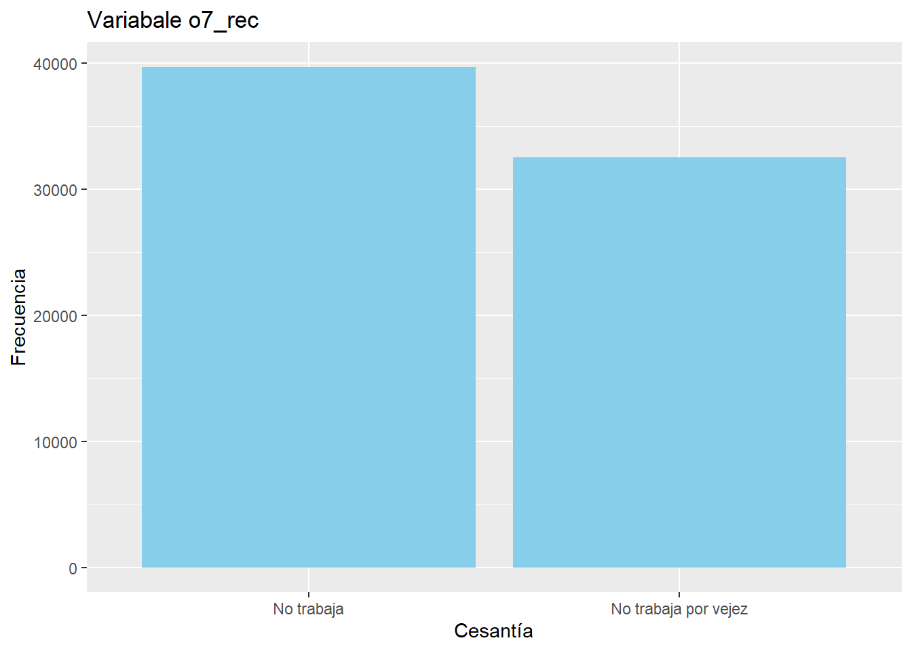
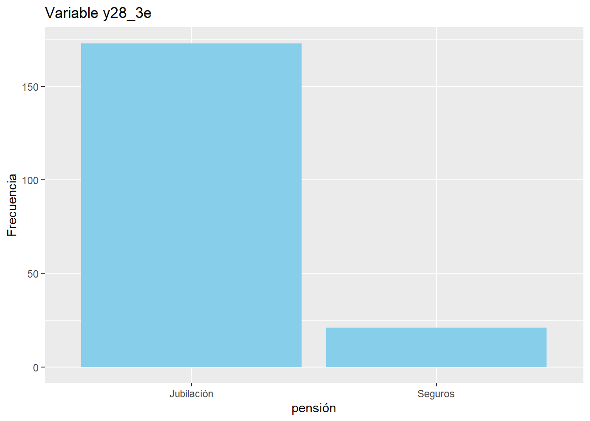

knitr::opts_chunk$set(root.dir = "C:/Users/josef/Documents/U/clases/Optativo R/Practico.3/processing")Trabajo 2
Trabajo 2
Por Josefa Gatica V.
El envejecimiento de la población es un fenómeno que afecta a todo el mundo. En este contexto, analizaremos las medidas que algunos países de América Latina, como Chile, han implementado para abordarlo.
En Chile, se creó el Bono por Hijo a través del programa ChileAtiende. Este beneficio aumenta la pensión de las mujeres mediante la entrega de un monto por cada hijo/a nacido/a vivo/a o adoptado/a que cumpla con ciertos requisitos.
En Italia, se implementó un programa que ofrece incentivos a los jóvenes para que habiten zonas despobladas. Estos incentivos incluyen facilidades de acceso a trabajo, vivienda y un bono monetario.
Las medidas que se están tomando para abordar el envejecimiento poblacional son diversas y varían según el país. Es importante evaluar la efectividad de estas medidas y continuar buscando soluciones innovadoras para garantizar el bienestar de las personas mayores en el futuro.
Si bien el programa de Italia resulta interesante, es fundamental tener en cuenta el contexto específico de Latinoamérica. Esta región posee un enorme potencial económico en la producción de alimentos y la extracción de recursos naturales, tal como lo indica (Angulo-Bustinza and Lis-Gutiérrez 2023). Sin embargo, también enfrenta desafíos en materia de protección social y medioambiental, como señala (Schulte et al. 2024). Para abordar estas problemáticas, analizaremos las medidas tomadas por países como Chile, Colombia, Ecuador y México.
La desigualdad económica y la carencia de resguardo social para la tercera edad son problemas urgentes que afectan a una gran parte de la población en Chile. Las AFP, el sistema de pensiones utilizado en el país, presenta deficiencias que lo hacen insuficiente para cubrir las necesidades básicas de los jubilados. Esta situación obliga a muchos jubilados a seguir trabajando a pesar de su edad y condición física, privándolos de una calidad de vida digna y dificultando el acceso a una atención médica adecuada. Es necesario implementar reformas estructurales al sistema de pensiones para garantizar que los jubilados reciban una pensión digna que les permita vivir con tranquilidad y acceder a la atención médica que necesitan.
Entonces retomando el fenómeno, que se enfrenta a un conjunto de desafíos sociales, económicos y políticos que requieren atención urgente. Este análisis explora las características del fenómeno, las medidas tomadas en algunos países y las repercusiones esperadas. Los desafíos entran en las categorías de servicios sociales y de salud por su aumento de demandan, por tanto, podrían verse saturados si no se implementan medidas adecuadas. También se cuenta con la disminución de la fuerza laboral, este fenómeno reduce la proporción de personas en edad productiva, lo que puede afectar el crecimiento económico y la capacidad de los sistemas de seguridad social para financiarse. La exacerbación de la desigualdad económica, es un tema importante para las personas mayores, ya que, son un grupo vulnerable que a menudo enfrenta dificultades económicas, especialmente si no cuentan con un sistema de pensiones adecuado. El envejecimiento poblacional podría agravar esta situación.
El deterioro de la calidad de vida, genera una falta de acceso a servicios de salud, seguridad social y oportunidades de participación social puede afectar negativamente la calidad de vida de las personas mayores.
Algunas medidas tomadas en Italia y Chile.
En Chile se implementó el Bono por Hijo a través de ChileAtiende para aumentar la pensión de las mujeres. Y en Italia tuvieron incentivos para que jóvenes habiten zonas despobladas (con acceso a trabajo, vivienda y bono monetario).
Pasando a Latinoamérica, esta región tiene potencial económico y es porque se producen alimentos y se extraen los recursos naturales. (Angulo-Bustinza and Lis-Gutiérrez 2023). Pero, también nos encontramos con desafíos como en la protección social y medioambiental, siendo estas, deficientes. (Schulte et al. 2024)
Viendo los antecedentes de América Latina nos focalizaremos en Chile en la comprobación del aumento poblacional en 2022 a través de la base de datos CASEN 2022. En chile: Se analiza la situación de las pensiones y trabajo, para evidenciar la necesidad de reformas estructurales. También se mencionan medidas tomadas en Colombia, Ecuador y México.
Las repercusiones sociales son la mayor demanda de servicios sociales y de salud, la disminución de la fuerza laboral, aumento de la pobreza y la vulnerabilidad social, riesgo de exclusión social de las personas mayores, deterioro de la calidad de vida y la autoestima de las personas mayores (h.garciaCalidadVidaAutoestima2022?).
Por tanto, se requiere de fortalecimiento de los sistemas de pensiones para garantizar una jubilación digna, ampliación de la cobertura de servicios sociales y de salud para atender las necesidades de las personas mayores, promoción del envejecimiento activo y saludable para que las personas mayores puedan seguir participando plenamente en la sociedad, lucha contra la discriminación por edad y la promoción de la inclusión social de las personas mayores, como también, implementación de políticas públicas integrales que aborden los desafíos del envejecimiento poblacional de manera efectiva.
En suma, el envejecimiento poblacional en América Latina es un fenómeno complejo que requiere una respuesta integral por parte de los gobiernos, la sociedad civil y el sector privado. Se necesitan reformas urgentes en los sistemas de pensiones, salud y protección social para garantizar el bienestar y la dignidad de las personas mayores en la región. Es fundamental promover un enfoque inclusivo que valore el aporte de las personas mayores a la sociedad y que les permita participar plenamente en su desarrollo.
pacman::p_load(sjlabelled,
dplyr,
root.dir,
stargazer,
sjmisc,
summarytools,
kableExtra,
sjPlot,
corrplot,
sessioninfo,
ggplot2,
sjt.xtab,
mergue,
tbl_vars,
car,
haven,
librería,)Installing package into 'C:/Users/josef/AppData/Local/R/win-library/4.2'
(as 'lib' is unspecified)Warning: package 'root.dir' is not available for this version of R
A version of this package for your version of R might be available elsewhere,
see the ideas at
https://cran.r-project.org/doc/manuals/r-patched/R-admin.html#Installing-packagesWarning: unable to access index for repository http://www.stats.ox.ac.uk/pub/RWin/bin/windows/contrib/4.2:
no fue posible abrir la URL 'http://www.stats.ox.ac.uk/pub/RWin/bin/windows/contrib/4.2/PACKAGES'Warning: 'BiocManager' not available. Could not check Bioconductor.
Please use `install.packages('BiocManager')` and then retry.Warning in p_install(package, character.only = TRUE, ...):Warning in library(package, lib.loc = lib.loc, character.only = TRUE,
logical.return = TRUE, : there is no package called 'root.dir'Installing package into 'C:/Users/josef/AppData/Local/R/win-library/4.2'
(as 'lib' is unspecified)Warning: package 'sjt.xtab' is not available for this version of R
A version of this package for your version of R might be available elsewhere,
see the ideas at
https://cran.r-project.org/doc/manuals/r-patched/R-admin.html#Installing-packagesWarning: unable to access index for repository http://www.stats.ox.ac.uk/pub/RWin/bin/windows/contrib/4.2:
no fue posible abrir la URL 'http://www.stats.ox.ac.uk/pub/RWin/bin/windows/contrib/4.2/PACKAGES'Warning: 'BiocManager' not available. Could not check Bioconductor.
Please use `install.packages('BiocManager')` and then retry.Warning in p_install(package, character.only = TRUE, ...):Warning in library(package, lib.loc = lib.loc, character.only = TRUE,
logical.return = TRUE, : there is no package called 'sjt.xtab'Installing package into 'C:/Users/josef/AppData/Local/R/win-library/4.2'
(as 'lib' is unspecified)Warning: package 'mergue' is not available for this version of R
A version of this package for your version of R might be available elsewhere,
see the ideas at
https://cran.r-project.org/doc/manuals/r-patched/R-admin.html#Installing-packagesWarning: unable to access index for repository http://www.stats.ox.ac.uk/pub/RWin/bin/windows/contrib/4.2:
no fue posible abrir la URL 'http://www.stats.ox.ac.uk/pub/RWin/bin/windows/contrib/4.2/PACKAGES'Warning: 'BiocManager' not available. Could not check Bioconductor.
Please use `install.packages('BiocManager')` and then retry.Warning in p_install(package, character.only = TRUE, ...):Warning in library(package, lib.loc = lib.loc, character.only = TRUE,
logical.return = TRUE, : there is no package called 'mergue'Installing package into 'C:/Users/josef/AppData/Local/R/win-library/4.2'
(as 'lib' is unspecified)Warning: package 'tbl_vars' is not available for this version of R
A version of this package for your version of R might be available elsewhere,
see the ideas at
https://cran.r-project.org/doc/manuals/r-patched/R-admin.html#Installing-packagesWarning: unable to access index for repository http://www.stats.ox.ac.uk/pub/RWin/bin/windows/contrib/4.2:
no fue posible abrir la URL 'http://www.stats.ox.ac.uk/pub/RWin/bin/windows/contrib/4.2/PACKAGES'Warning: 'BiocManager' not available. Could not check Bioconductor.
Please use `install.packages('BiocManager')` and then retry.Warning in p_install(package, character.only = TRUE, ...):Warning in library(package, lib.loc = lib.loc, character.only = TRUE,
logical.return = TRUE, : there is no package called 'tbl_vars'Installing package into 'C:/Users/josef/AppData/Local/R/win-library/4.2'
(as 'lib' is unspecified)Warning: package 'librería' is not available for this version of R
A version of this package for your version of R might be available elsewhere,
see the ideas at
https://cran.r-project.org/doc/manuals/r-patched/R-admin.html#Installing-packagesWarning: unable to access index for repository http://www.stats.ox.ac.uk/pub/RWin/bin/windows/contrib/4.2:
no fue posible abrir la URL 'http://www.stats.ox.ac.uk/pub/RWin/bin/windows/contrib/4.2/PACKAGES'Warning: 'BiocManager' not available. Could not check Bioconductor.
Please use `install.packages('BiocManager')` and then retry.Warning in p_install(package, character.only = TRUE, ...):Warning in library(package, lib.loc = lib.loc, character.only = TRUE,
logical.return = TRUE, : there is no package called 'librería'
Your package installedWarning in pacman::p_load(sjlabelled, dplyr, root.dir, stargazer, sjmisc, : Failed to install/load:
root.dir, sjt.xtab, mergue, tbl_vars, librería, load(url("https://github.com/justicia-distributiva/merit-edjust/raw/main/input/data-original/casen2022.RData"))base_CASEN<- select(casen22, o7, y28_3e)#Variable o7
base_CASEN <- mutate(base_CASEN, o7_rec = case_when(o7 == 1 ~ 1,
o7 == 2 ~ 1,
o7 == 3 ~ 1,
o7 == 4 ~ 1,
o7 == 5 ~ 1,
o7 == 6 ~ 2,
o7 == 7 ~ 2,
o7 == 8 ~ 1,
o7 == 9 ~ 1,
o7 == 10 ~ 1,
o7 == 11 ~ 1,
o7 == 12 ~ 2,
o7 == 13 ~ 1,
o7 == 14 ~ 1,
o7 == 15 ~ 1,
o7 == 16 ~ 1,
o7 == 17 ~ 1,
o7 == 18 ~ 1,
o7 == 19 ~ 1))
base_CASEN$o7_rec <- factor(base_CASEN$o7_rec,
levels = c(1, 2),
labels = c("No trabaja", "No trabaja por vejez"))
levels(base_CASEN$o7_rec)[1] "No trabaja" "No trabaja por vejez"#etiquetado
get_label(base_CASEN$o7_rec)NULLbase_CASEN$o7_rec <- set_label(x = base_CASEN$o7_rec,label = "Trabajo")#variable y28_3e
base_CASEN <- mutate(base_CASEN, y28_3e = case_when(y28_3e == 1 ~ 1,
y28_3e == 2 ~ 1,
y28_3e == 4 ~ 2,
y28_3e == 5 ~ 2,
y28_3e == 6 ~ 2))
base_CASEN$y28_3e <- factor(base_CASEN$y28_3e,
levels = c(1, 2),
labels = c("Jubilación", "Seguros"))
levels(base_CASEN$y28_3e)[1] "Jubilación" "Seguros" base_CASEN <-as.data.frame(base_CASEN)
stargazer(base_CASEN, type="text")
=======================================
Statistic N Mean St. Dev. Min Max
---------------------------------------
o7 72,214 9.846 3.810 1 19
---------------------------------------get_label(base_CASEN$y28_3e)NULLbase_CASEN$y28_3e <- set_label(x = base_CASEN$y28_3e,label = "Pensión")#Tabla de frecuencia
base_CASEN %>% dplyr::group_by(o7_rec) %>% summarise(mean(y28_3e, na.rm=TRUE))Warning: There were 3 warnings in `summarise()`.
The first warning was:
ℹ In argument: `mean(y28_3e, na.rm = TRUE)`.
ℹ In group 1: `o7_rec = No trabaja`.
Caused by warning in `mean.default()`:
! argument is not numeric or logical: returning NA
ℹ Run `dplyr::last_dplyr_warnings()` to see the 2 remaining warnings.# A tibble: 3 × 2
o7_rec `mean(y28_3e, na.rm = TRUE)`
<fct> <dbl>
1 No trabaja NA
2 No trabaja por vejez NA
3 <NA> NAsjt.xtab(base_CASEN$o7_rec, base_CASEN$y28_3e,
show.col.prc=TRUE,
show.summary=FALSE,
encoding = "UTF-8")| Trabajo | Pensión | Total | |
| Jubilación | Seguros | ||
| No trabaja | 18 15.5 % |
2 12.5 % |
20 15.2 % |
| No trabaja por vejez | 98 84.5 % |
14 87.5 % |
112 84.8 % |
| Total | 116 100 % |
16 100 % |
132 100 % |
La muestra de las personas que no trabajan por vejez y tienen seguro es mayor que las personas que no trabaja por vejez y que tiene jubilación habiendo una diferencia mínima de 3%. Entonces la moda se centra en “No trabaja por vejez y tiene seguro” siendo esta de un 87.5%. Pero si lo vemos desde las personas que no trabajan y tienen seguros a direfencia de la que tiene no trabaja y tiene seguro con una brecha de 75%, esto quiere decir que los adultos mayores suelen tener mayor resguardo con los seguros que las personas que no trabaja y tiene seguro. Son en gran parte dependientes de su seguro y jubilación para su sustento.
#Gráfico variable o7
base_CASEN %>% filter(!is.na(o7_rec)) %>%
ggplot(aes(x = o7_rec)) +
geom_bar(fill = "skyblue")+
labs(title = "Variabale o7_rec",
x = "Cesantía",
y = "Frecuencia")
La brecha entre la cesantía y el cesantía por vejez no es mejor, esto quiere decir que hay mas personas que no trabajan que adultos mayores que no trabajan por su condición. Esto nos puede indicar que los de la tercera edad están trabajando más.
#Gráfico variable y28_3e
base_CASEN %>% filter(!is.na(y28_3e)) %>%
ggplot(aes(x = y28_3e)) +
geom_bar(fill = "skyblue")+
labs(title = "Variable y28_3e",
x = "pensión",
y = "Frecuencia")
Se observa una gran brecha de las personas quienes reciben seguros y de las personas que reciben de la jubilación, esto nos demuestra que la jubilación es en mayor, por tanto, hay una alta prevalencia del seguro que influye positivamente en la necesidad de resguardo y apoyo para los adultos mayores. Esto reconoce la importancia de los seguros como fuente de ingresos en este grupo poblacional.
Hay que tener en cuenta que la dependencia de estas fuentes de ingresos no implica necesariamente una situación de vulnerabilidad o pobreza. Sin embargo, sí pone de manifiesto la necesidad de políticas públicas y programas sociales que apoyen a los adultos mayores y aseguren su acceso a ingresos dignos y suficientes.
References
Angulo-Bustinza, Harold D., and Jenny Paola Lis-Gutiérrez. 2023. “Trade and Inclusive Economic Growth: China and Latin America (2004-2021).” Retos 13 (26): 309–23. https://doi.org/10.17163/ret.n26.2023.08.
Schulte, Lea, Luise Quoss, Patrick Comer, Maria Lumbierres, Emmanuel Oceguera Conchas, Henrique M. Pereira, and Jose Valdez. 2024. “Identifying Critical Vegetation Types for Biodiversity Conservation in the Americas.” Preprint. https://doi.org/10.1590/SciELOPreprints.7272.